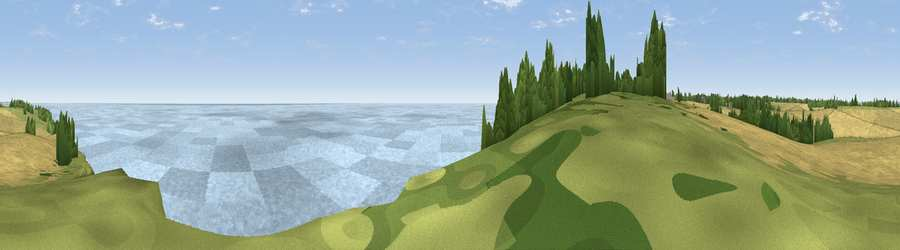

Viewpoint near St. Margaret's at Cliffe
#6346 in England · top 23% of its area beats it · near St. Margaret's at CliffeWhere it is
The exact computed spot (TR 37425 45250). Click the marker for map links.
The view, rendered

A 360° render of this exact spot computed from the terrain model, tree cover and land cover — summer colours, afternoon light, calibrated against photographs of famous viewpoints. Real trees, hedges and buildings will differ in detail.
The panorama
Grey silhouette: terrain skyline in each direction (720 bearings, Earth curvature and refraction included). Dashed green: skyline with trees (+15 m) and buildings (+8 m) as obstacles. Blue strip: how far the ground is visible on each bearing.
Where the view opens
Wedge length = distance to the farthest visible ground on that bearing (vegetation-aware). Rings at 10, 25 and 50 km.
What fills the view
80% water · 9% grassland · 5% wetland · 4% cropland · 2% woodland
Angular shares of the visible panorama (visual magnitude), not map area. Landscape diversity 0.33 (0–1 Shannon).
Key numbers
More beautiful places nearby
The staircase of upgrades: each row has a higher view potential than everything closer. Driving times are estimates from straight-line distance, calibrated against real road routing — check an actual route before setting out.
| Place | Direction | Drive | Score |
|---|---|---|---|
| Viewpoint near St. Margaret's at Cliffe | SW · 3 km | ~7 min | 72.4 |
| Viewpoint near Dover | WSW · 6 km | ~13 min | 75.7 |
| Viewpoint near Dover | SW · 8 km | ~16 min | 76.4 |
| Viewpoint near Capel-le-Ferne | WSW · 11 km | ~21 min | 77.1 |
| Viewpoint near Capel-le-Ferne | WSW · 12 km | ~22 min | 77.9 |
| Viewpoint near Capel-le-Ferne | WSW · 15 km | ~27 min | 80.2 |
| Viewpoint near Willingdon | WSW · 90 km | ~115 min | 83.4 |
| Wilmington Hill | WSW · 93 km | ~117 min | 85.4 |
51.15721, 1.39402 · source: screening · position refined by local search. Computed location — check access rights before visiting.